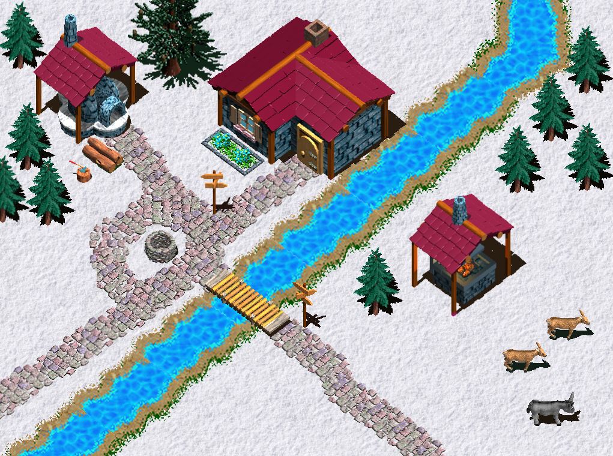
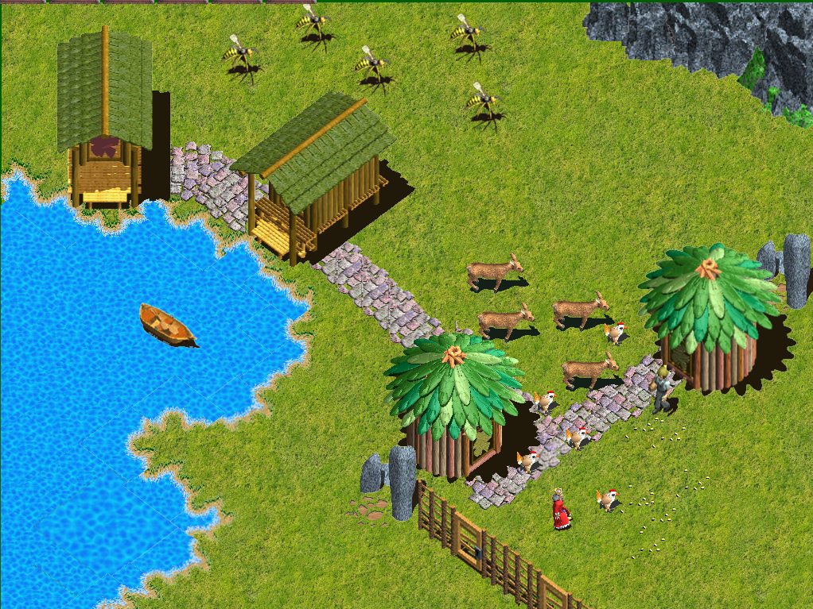
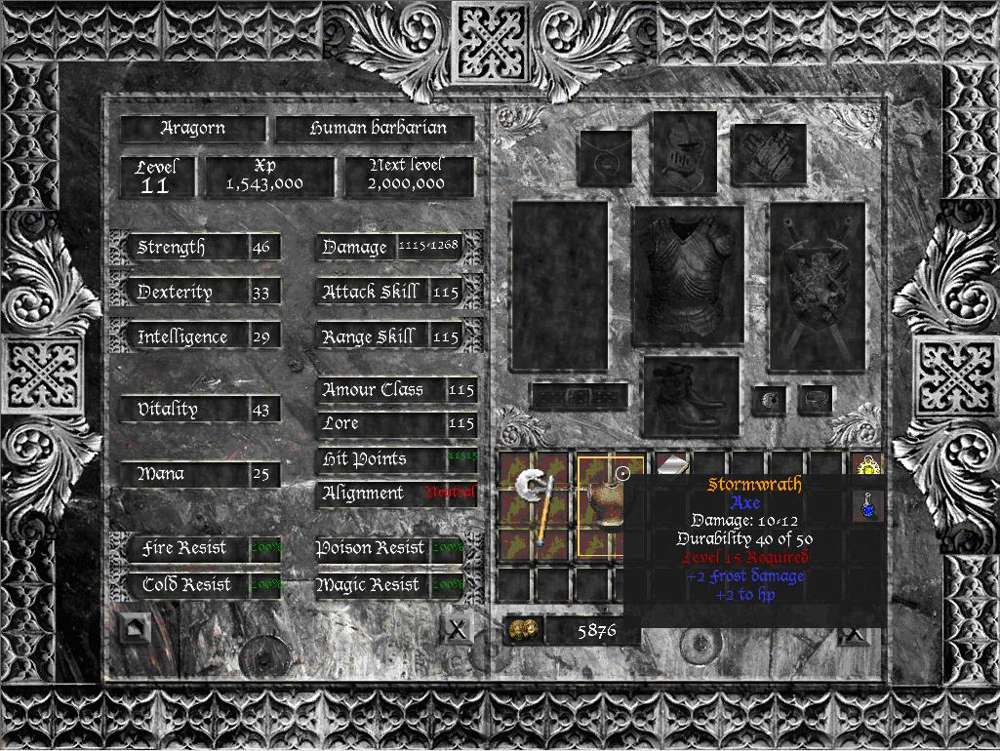

Arkane

Town scene

Wilderness scene

Inventory screen
The aim for this project is to create an isometric RPG game for the PC platform. Three other people are involved in the project, an artist, a writer and a designer for the game, to help with creation of much of the content such as items and statistics. The toolset I have developed will be used to help create this content.
The interface system has nearly been completed and many core game classes have been implemented.
The first demo will contain a simple wilderness map, allowing the player to move around (which will require path finding to avoid obstacles), pick up items and move these within the inventory system. The characters' main appearance will not alter much based on equipment or stats. The player will be able to move inside a select number of buildings and interact with objects and characters. This demo will also tell the first chapter of the story.
I plan to add a quest system, potion making system and item making system after an inital demo has been completed and tested.
<< Back